Corpus / illustrated study guides
Human anatomy, from visible form to inner structure.
Start with the illustration. Stay for the details: 74 guides connect each body system to named structures, what they do, and why they matter.
 Inside the heartChambers · valves · blood flow↗
Inside the heartChambers · valves · blood flow↗Anatomy foundations
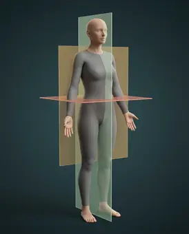
24 documented partsAnatomical language · planes & movementLearn patient right and left, body planes, directional terms and movements; the colored reference planes are labelled only where visibly shown.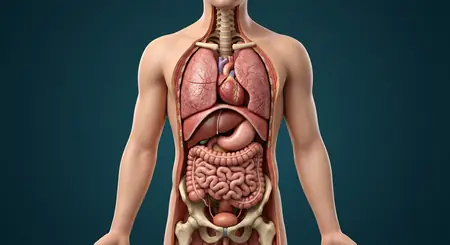
28 documented partsBody cavities · regions & quadrantsTrace dorsal and ventral cavities, serous spaces and patient-oriented abdominal quadrants and regions.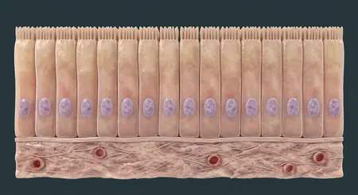
28 documented partsCells & four basic tissuesExplore cell structure and the four tissue families with dedicated microscopic-scale teaching illustrations.Conception to birth
 20 documented partsFertilization · sperm meets oocyteFollow sperm transit, capacitation, zona interaction, membrane fusion and formation of the diploid zygote.
20 documented partsFertilization · sperm meets oocyteFollow sperm transit, capacitation, zona interaction, membrane fusion and formation of the diploid zygote. 20 documented partsZygote to blastocyst · early divisionsTrace the separate preimplantation chapter: zygote, cleavage, morula, blastocoel and hatching.
20 documented partsZygote to blastocyst · early divisionsTrace the separate preimplantation chapter: zygote, cleavage, morula, blastocoel and hatching. 20 documented partsImplantation · blastocyst in endometriumSeparate implantation stage: endometrial receptivity, hatching, trophoblast invasion and early hCG.
20 documented partsImplantation · blastocyst in endometriumSeparate implantation stage: endometrial receptivity, hatching, trophoblast invasion and early hCG. 20 documented partsPlacenta · maternal–fetal exchangeSeparate placenta chapter: chorionic villi, decidua, separated circulations, cord and membranes.
20 documented partsPlacenta · maternal–fetal exchangeSeparate placenta chapter: chorionic villi, decidua, separated circulations, cord and membranes. 20 documented partsEmbryo · early organ formationSeparate embryonic chapter: germ layers, neurulation, folding, early heart and limb buds before fetal growth.
20 documented partsEmbryo · early organ formationSeparate embryonic chapter: germ layers, neurulation, folding, early heart and limb buds before fetal growth. 20 documented partsFetus · growth & pregnancy trimestersFollow fetal growth, placenta, organs and first, second and third trimester landmarks without confusing pregnancy weeks and conception age.
20 documented partsFetus · growth & pregnancy trimestersFollow fetal growth, placenta, organs and first, second and third trimester landmarks without confusing pregnancy weeks and conception age. 20 documented partsLabor stage 1 · cervix dilatesSeparate first-stage birth chapter: uterine contractions, cervical effacement and dilation to complete opening.
20 documented partsLabor stage 1 · cervix dilatesSeparate first-stage birth chapter: uterine contractions, cervical effacement and dilation to complete opening. 20 documented partsLabor stage 2 · birth of babySeparate second-stage birth chapter: full dilation, fetal descent, rotation and delivery of the baby.
20 documented partsLabor stage 2 · birth of babySeparate second-stage birth chapter: full dilation, fetal descent, rotation and delivery of the baby. 20 documented partsLabor stage 3 · delivery of placentaSeparate third-stage birth chapter: placental separation, uterine contraction, membranes and postpartum bleeding awareness.
20 documented partsLabor stage 3 · delivery of placentaSeparate third-stage birth chapter: placental separation, uterine contraction, membranes and postpartum bleeding awareness.Circulatory
22 documented partsHeartA four-chambered muscular pump with four valves and its own electrical conduction system. 20 documented partsVascular systemTwo trees from one pump: arteries deliver under pressure, veins return against gravity — with valves, shunts and plexuses throughout.
20 documented partsVascular systemTwo trees from one pump: arteries deliver under pressure, veins return against gravity — with valves, shunts and plexuses throughout. 20 documented partsBone marrow & bloodThe hidden factory: red marrow makes two million blood cells per second; yellow marrow stores energy; both sit behind bone you see every day.
20 documented partsBone marrow & bloodThe hidden factory: red marrow makes two million blood cells per second; yellow marrow stores energy; both sit behind bone you see every day.Respiratory
 21 documented partsLungsTwo elastic, pleura-lined organs where air and blood come within 0.5 µm of each other.
21 documented partsLungsTwo elastic, pleura-lined organs where air and blood come within 0.5 µm of each other.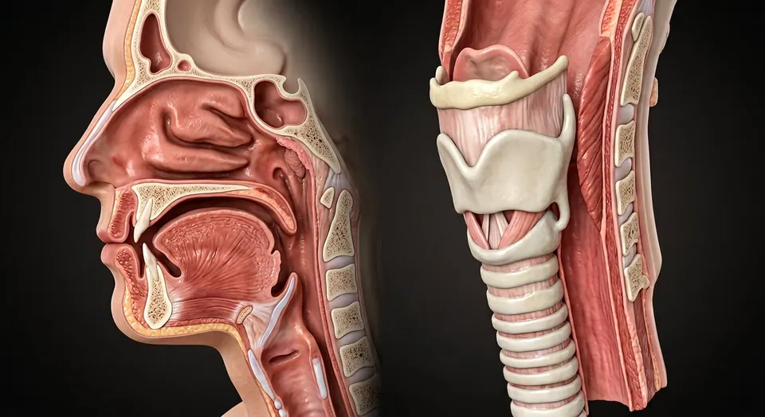
20 documented partsUpper airwayThe conducting corridor: nose conditions the air, pharynx crosses food and air, larynx turns air into voice and guards the lungs, trachea delivers.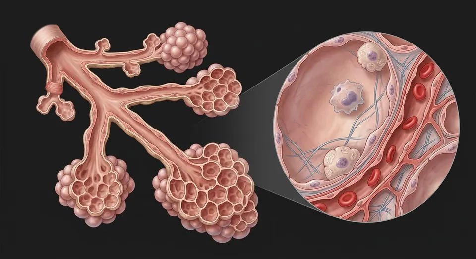
20 documented partsPulmonary acinus · gas-exchange barrierFrom terminal bronchiole to alveolar sac, type I/II pneumocytes, macrophages and the air–blood barrier.Nervous
 20 documented partsBrainMidsagittal section: cerebrum, diencephalon, brainstem and cerebellum around the ventricular system.
20 documented partsBrainMidsagittal section: cerebrum, diencephalon, brainstem and cerebellum around the ventricular system. 22 documented partsSpinal cordCross-section: a grey butterfly inside white tracts, wrapped in three meninges.
22 documented partsSpinal cordCross-section: a grey butterfly inside white tracts, wrapped in three meninges. 20 documented partsNervous system — overviewOne continuous network: the brain and spinal cord compute, and 43 pairs of peripheral nerves carry orders out and reports back.
20 documented partsNervous system — overviewOne continuous network: the brain and spinal cord compute, and 43 pairs of peripheral nerves carry orders out and reports back. 20 documented partsNervous system — maleThe male figure with every nerve pathway highlighted — same wiring as the female page, shown on male proportions for side-by-side study.
20 documented partsNervous system — maleThe male figure with every nerve pathway highlighted — same wiring as the female page, shown on male proportions for side-by-side study. 20 documented partsNervous system — femaleThe female figure with every nerve pathway highlighted — study pelvic plexus branching on female proportions.
20 documented partsNervous system — femaleThe female figure with every nerve pathway highlighted — study pelvic plexus branching on female proportions. 20 documented partsCranial nervesTwelve pairs leave the brain directly — smell to tongue movement — and they are examined in strict order in every neurological exam.
20 documented partsCranial nervesTwelve pairs leave the brain directly — smell to tongue movement — and they are examined in strict order in every neurological exam.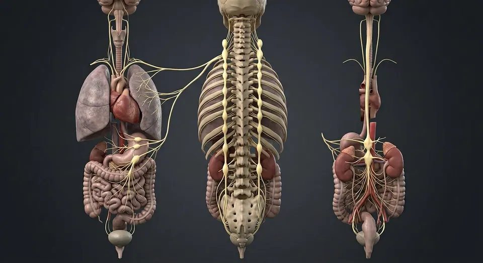
20 documented partsAutonomic nervous systemThe unconscious half of the nervous system: sympathetic accelerator, parasympathetic brake, and the gut's own enteric brain. 20 documented partsFacial nerve · CN VIITrack facial motor branches, taste, lacrimation and salivation through the temporal bone and parotid gland.
20 documented partsFacial nerve · CN VIITrack facial motor branches, taste, lacrimation and salivation through the temporal bone and parotid gland. 20 documented partsTrigeminal nerve · CN VMap facial sensation and masticatory motor fibers without confusing trigeminal CN V with facial CN VII.
20 documented partsTrigeminal nerve · CN VMap facial sensation and masticatory motor fibers without confusing trigeminal CN V with facial CN VII.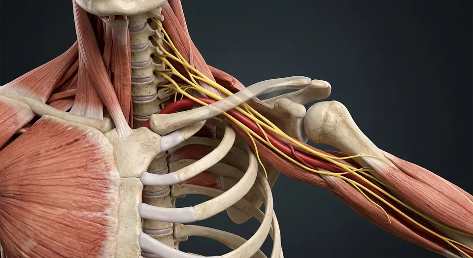
20 documented partsBrachial plexus · arm nervesTrace the arm nerve network from spinal roots through trunks, divisions and cords to five terminal nerves. 20 documented partsCerebrum · cortex & deep pathwaysTrace cortex, white matter, corpus callosum, basal nuclei and thalamus on a realistic coronal section.
20 documented partsCerebrum · cortex & deep pathwaysTrace cortex, white matter, corpus callosum, basal nuclei and thalamus on a realistic coronal section. 20 documented partsMeninges, CSF & venous sinusesFollow dura, arachnoid and pia; then CSF from choroid plexus to subarachnoid drainage.
20 documented partsMeninges, CSF & venous sinusesFollow dura, arachnoid and pia; then CSF from choroid plexus to subarachnoid drainage. 20 documented partsBrainstem & cerebellar circuitryLocate brainstem levels, cranial-nerve nuclei, pyramids and cerebellar peduncles, cortex and nuclei.
20 documented partsBrainstem & cerebellar circuitryLocate brainstem levels, cranial-nerve nuclei, pyramids and cerebellar peduncles, cortex and nuclei.Digestive
 20 documented partsLiverThe body's chemical plant: metabolism, bile, clotting factors, detoxification and storage.
20 documented partsLiverThe body's chemical plant: metabolism, bile, clotting factors, detoxification and storage. 20 documented partsStomach & intestinesThe gastrointestinal tract from oesophagus to rectum, with the villus that does the absorbing.
20 documented partsStomach & intestinesThe gastrointestinal tract from oesophagus to rectum, with the villus that does the absorbing. 21 documented partsPancreasA dual gland: digestive enzymes from acini, hormones from the islets of Langerhans.
21 documented partsPancreasA dual gland: digestive enzymes from acini, hormones from the islets of Langerhans.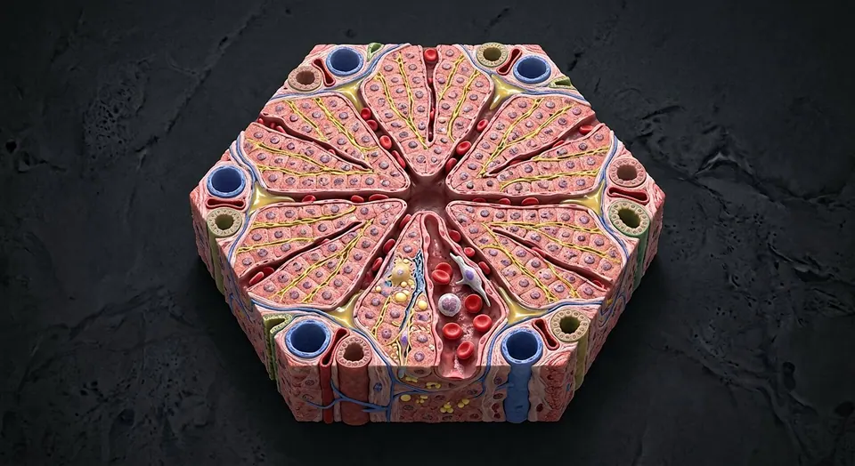
20 documented partsHepatic lobule · liver microanatomySee portal triad, central vein, sinusoidal cells and the opposite directions of blood and bile.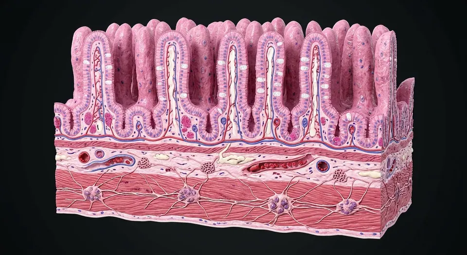
20 documented partsSmall intestine · wall & enteric plexusesMap villus–crypt renewal, epithelial cell types, capillaries and lacteals, plus two enteric nerve plexuses. 76 documented partsTeeth · dental anatomyFollow crown-to-root layers, 32 permanent and 20 primary tooth positions, class shapes, FDI/Universal numbers and dental sensory nerves.
76 documented partsTeeth · dental anatomyFollow crown-to-root layers, 32 permanent and 20 primary tooth positions, class shapes, FDI/Universal numbers and dental sensory nerves.Urinary
 20 documented partsKidneyCoronal section plus a nephron: filtration, reabsorption, secretion and urine concentration.
20 documented partsKidneyCoronal section plus a nephron: filtration, reabsorption, secretion and urine concentration. 20 documented partsUrinary bladderA detrusor-muscle reservoir with a smooth trigone and a two-stage sphincter.
20 documented partsUrinary bladderA detrusor-muscle reservoir with a smooth trigone and a two-stage sphincter.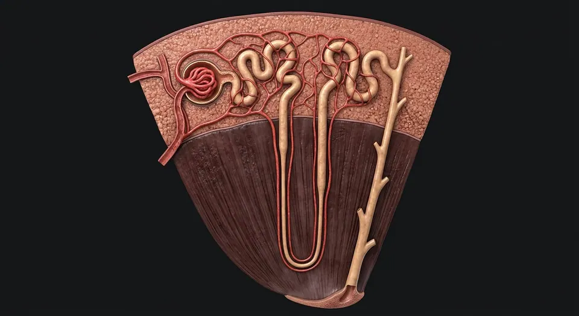
20 documented partsNephron · kidney microanatomyFollow filtration through glomerular barrier, segmented tubules, medullary loop and collecting ducts.Sensory
 20 documented partsEyeSagittal section: an optical instrument that focuses light onto a neural film.
20 documented partsEyeSagittal section: an optical instrument that focuses light onto a neural film.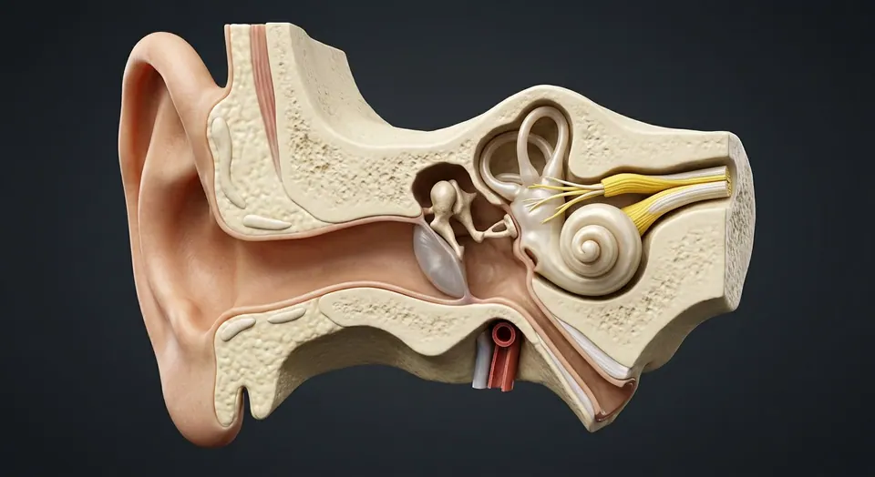
22 documented partsEarA pressure-wave collector that turns vibration into nerve impulses and doubles as a gyroscope. 20 documented partsEye · microscopic layersThree ocular coats, five classical corneal layers, aqueous route, lens suspension, macula and optic disc.
20 documented partsEye · microscopic layersThree ocular coats, five classical corneal layers, aqueous route, lens suspension, macula and optic disc. 20 documented partsRetina · neural microanatomyRods, cones, bipolar and ganglion circuits; fovea, optic disc, pigment epithelium and dual blood supply.
20 documented partsRetina · neural microanatomyRods, cones, bipolar and ganglion circuits; fovea, optic disc, pigment epithelium and dual blood supply.Skeletal system
 31 documented partsSkeletonThe frame: leverage for muscle, armour for viscera, a calcium bank, and the marrow factory that makes every blood cell.
31 documented partsSkeletonThe frame: leverage for muscle, armour for viscera, a calcium bank, and the marrow factory that makes every blood cell. 20 documented partsJoints & ligamentsWhere bones meet: cartilage cushions, capsules contain, ligaments guide — the knee is the classic teaching joint because every principle is visible in it.
20 documented partsJoints & ligamentsWhere bones meet: cartilage cushions, capsules contain, ligaments guide — the knee is the classic teaching joint because every principle is visible in it. 20 documented partsShoulder jointMobility bought at the price of stability: a shallow glenoid, a loose capsule, and four rotator-cuff tendons doing the holding.
20 documented partsShoulder jointMobility bought at the price of stability: a shallow glenoid, a loose capsule, and four rotator-cuff tendons doing the holding. 30 documented partsSkull & facial bonesName every one of the 14 facial and 8 cranial bones, with accurate visible labels and deeper views for hidden structures.
30 documented partsSkull & facial bonesName every one of the 14 facial and 8 cranial bones, with accurate visible labels and deeper views for hidden structures.Muscular system

Female reproductive
 20 documented partsFemale reproductive systemA cyclic system: ovulation, fertilisation in the tube, implantation in the endometrium.
20 documented partsFemale reproductive systemA cyclic system: ovulation, fertilisation in the tube, implantation in the endometrium. 20 documented partsFemale body — anteriorA glass-body view of the female: major organs in place, with breasts, uterus and ovaries completing the picture.
20 documented partsFemale body — anteriorA glass-body view of the female: major organs in place, with breasts, uterus and ovaries completing the picture.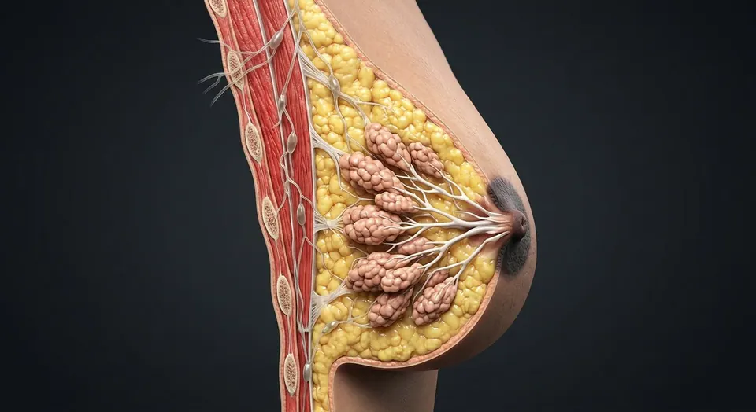
20 documented partsBreastA modified sweat gland: glandular lobules make milk, ducts carry it, fat gives shape, and lymph drains mostly to the axilla — which is why breast cancer staging checks axillary nodes. 20 documented partsFemale pelvis & perineumThe female pelvic floor in sagittal section: bladder and urethra, vagina and anteverted uterus, rectum behind — plus the ligaments and pouches that position them.
20 documented partsFemale pelvis & perineumThe female pelvic floor in sagittal section: bladder and urethra, vagina and anteverted uterus, rectum behind — plus the ligaments and pouches that position them. 20 documented partsUterus — layers & cavityThe womb in cross-section: endometrium, junctional zone, myometrium, cavity, isthmus and the key clinical boundaries.
20 documented partsUterus — layers & cavityThe womb in cross-section: endometrium, junctional zone, myometrium, cavity, isthmus and the key clinical boundaries. 20 documented partsCervix — transformation zoneThe gynecology examination landmark: external os, canal, squamocolumnar junction and transformation zone in one close-up.
20 documented partsCervix — transformation zoneThe gynecology examination landmark: external os, canal, squamocolumnar junction and transformation zone in one close-up. 20 documented partsOvary & uterine tubeFrom follicular cortex to ampulla: the ovary, fimbriae, tubal mucosal folds and the hidden routes of fertilization.
20 documented partsOvary & uterine tubeFrom follicular cortex to ampulla: the ovary, fimbriae, tubal mucosal folds and the hidden routes of fertilization. 20 documented partsVagina — walls & fornicesA layered fibromuscular canal: rugae, muscularis, fornices, vestibular opening, adjacent urethra and rectum.
20 documented partsVagina — walls & fornicesA layered fibromuscular canal: rugae, muscularis, fornices, vestibular opening, adjacent urethra and rectum. 20 documented partsVulva — external genital anatomyThe external genitalia, carefully distinguished from the vagina: labia, clitoral complex, vestibule, openings, glands and perineum.
20 documented partsVulva — external genital anatomyThe external genitalia, carefully distinguished from the vagina: labia, clitoral complex, vestibule, openings, glands and perineum. 20 documented partsPelvic support & surgical planesThe surgical map: ureter under uterine artery, uterosacral and cardinal supports, broad ligament folds, ovarian pedicle and pelvic floor.
20 documented partsPelvic support & surgical planesThe surgical map: ureter under uterine artery, uterosacral and cardinal supports, broad ligament folds, ovarian pedicle and pelvic floor. 20 documented partsClitoral erectile complexA three-dimensional neurovascular and erectile complex: paired crura, body, glans and closely related vestibular bulbs.
20 documented partsClitoral erectile complexA three-dimensional neurovascular and erectile complex: paired crura, body, glans and closely related vestibular bulbs. 20 documented partsEgg cell · oocyte & ovulationA separate egg chapter: primary versus secondary oocyte, meiosis, zona pellucida, corona radiata and ovulation.
20 documented partsEgg cell · oocyte & ovulationA separate egg chapter: primary versus secondary oocyte, meiosis, zona pellucida, corona radiata and ovulation.Male reproductive
 20 documented partsMale reproductive systemSperm production in the scrotum, maturation in the epididymis, and a shared exit with urine.
20 documented partsMale reproductive systemSperm production in the scrotum, maturation in the epididymis, and a shared exit with urine. 20 documented partsMale body — anteriorA glass-body view of the male: every major organ in place, from brain to testes, with the reproductive tract in the pelvis.
20 documented partsMale body — anteriorA glass-body view of the male: every major organ in place, from brain to testes, with the reproductive tract in the pelvis. 20 documented partsMale pelvis & perineumThe male pelvic floor in sagittal section: bladder, prostate and urethra in front, rectum and anal canal behind, and the muscular sheet that holds them up.
20 documented partsMale pelvis & perineumThe male pelvic floor in sagittal section: bladder, prostate and urethra in front, rectum and anal canal behind, and the muscular sheet that holds them up. 20 documented partsTestis & epididymis — microanatomyThe sperm-production organ from tunica through seminiferous tubule to rete, efferent ducts and epididymal tail.
20 documented partsTestis & epididymis — microanatomyThe sperm-production organ from tunica through seminiferous tubule to rete, efferent ducts and epididymal tail. 21 documented partsProstate, ducts & penisProstatic zones and the urinary–ejaculatory crossing: urethra, verumontanum, ducts, seminal vesicles and erectile bodies.
21 documented partsProstate, ducts & penisProstatic zones and the urinary–ejaculatory crossing: urethra, verumontanum, ducts, seminal vesicles and erectile bodies.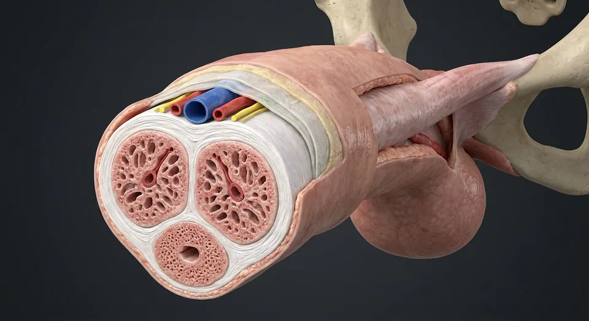
20 documented partsPenile erectile tissueTwo dorsal cavernous bodies and one ventral spongiosum carry arterial, neural and urethral pathways through the penis. 20 documented partsSperm cell · anatomy & productionA separate sperm chapter: head, midpiece, flagellum, meiosis, Sertoli support and epididymal maturation.
20 documented partsSperm cell · anatomy & productionA separate sperm chapter: head, midpiece, flagellum, meiosis, Sertoli support and epididymal maturation.